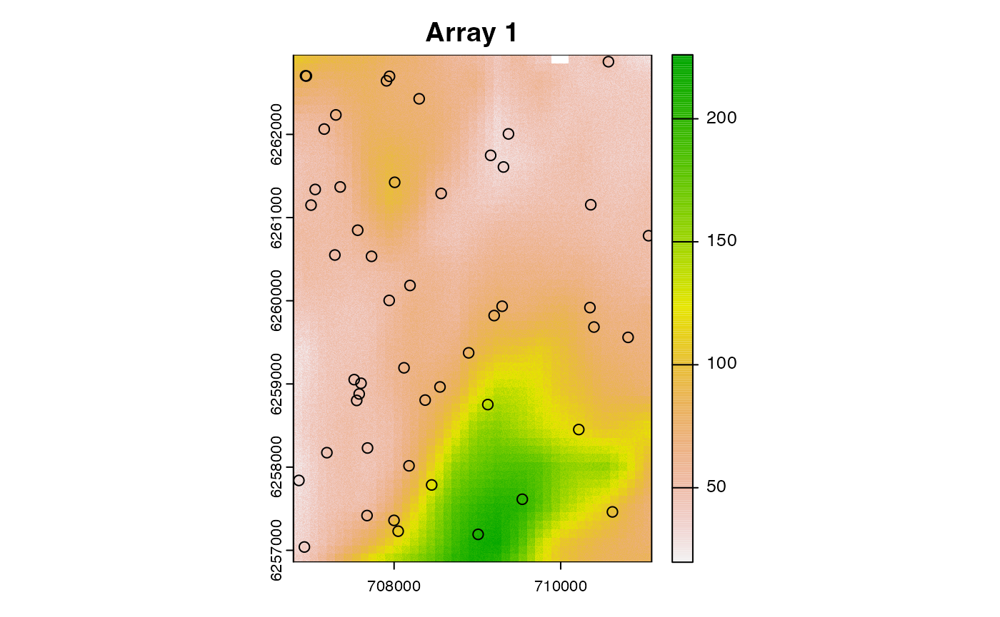
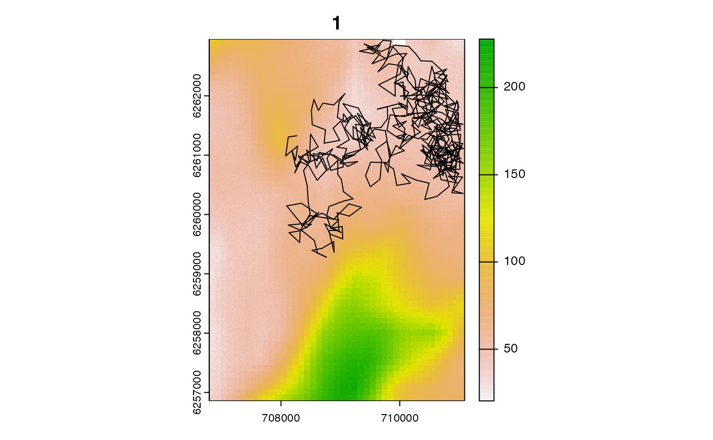
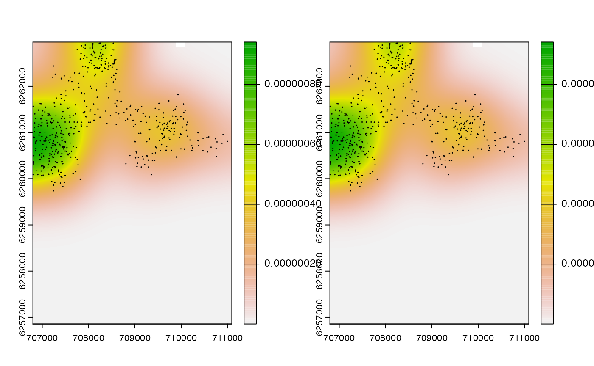
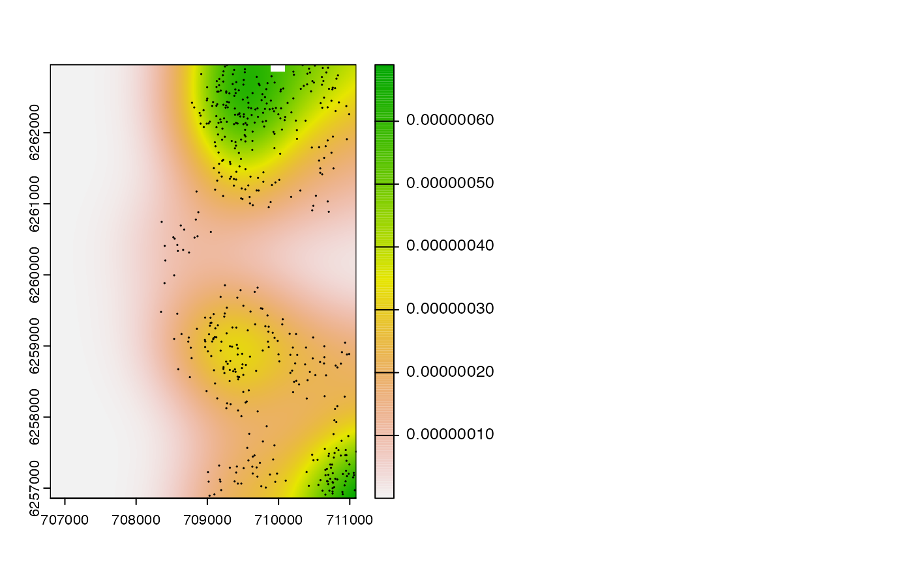

This demonstration illustrates convergence challenges in
pf_forward(). Convergence is the complete reconstruction of
possible locations for an individual from the start to the end of the
time series. A convergence failure occurs when the simulation fails to
reach the end of the time series; i.e. it reaches a time step at which,
given previously sampled locations, there are no valid locations into
which the algorithm can step next. Convergence failures can result from
erroneous observations or assumptions but they are also dependent upon
the sampling strategy. Assuming that our observations and assumptions
are correct, this demonstration shows how we can improve efficiency and
convergence by tuning selected algorithm parameters related to the
sampling strategy. We simulate a hypothetical study area and movement
time series. The parameters of the simulation are chosen such that the
data uniquely define the individual’s location with complete certainty.
We then implement the forward simulation of individual movements via
pf_forward(). Given the selected parameters, there is only
one possible location for the individual at each time step and this
makes convergence difficult, but we successfully achieve convergence by
tuning the sampling strategy. At the end of the process, we validate the
outputs and demonstrate successful reconstruction of the one true
movement path.
#### Define study area
# Define high-resolution grid
gebco <- dat_gebco()
gebco <- terra::crop(gebco, terra::ext(706828.9, 711135.5, 6256889, 6262960))
gebco <- terra::disagg(gebco, fact = 50)
#>
|---------|---------|---------|---------|
==
# For demonstration purposes, modify depths to uniquely define grid cells
set.seed(seed)
gebco[] <- gebco[] + 10 + runif(length(gebco[]), 0, 15) + rnorm(length(gebco[]))
table(duplicated(na.omit(gebco[])))
#>
#> FALSE
#> 6552500
stopifnot(!any(gebco[] < 0, na.rm = TRUE))
#### Define study period
period <- seq(as.POSIXct("2016-01-01", tz = "UTC"), by = "2 mins", length = 500L)
#### Simulate array & path
# Simulate array
set.seed(seed)
array <- sim_array(gebco,
.n_receiver = 50,
.receiver_range = 750,
.receiver_start = as.Date("2016-01-01"),
.receiver_end = as.Date("2017-01-01"))
# Simulate movement path
origin <- cbind(709144.3, 6261561)
set.seed(seed)
path <- sim_path_walk(.bathy = gebco,
.origin = origin,
.n_step = length(period),
.timestamp = period)
#### Simulate observations
# Simulate detections
acoustics <- sim_detections(path, array)
# Simulate archival observations
# * For demonstration purposes, we assume depth is observed perfectly
archival <- data.table(timestep = path$timestep, depth = path$cell_z)
archival$timestamp <- period
#### Collect datasets for `pf_forward()`
dlist <- pat_setup_data(.acoustics = acoustics,
.moorings = array,
.archival = archival,
.bathy = gebco,
.lonlat = FALSE)
# Include algorithm layers
dlist$algorithm$detection_overlaps <-
acs_setup_detection_overlaps(dlist)
dlist$algorithm$detection_kernels <-
acs_setup_detection_kernels(dlist)
#### Collect observations for `pf_forward()`
obs <- pf_setup_obs(.dlist = dlist,
.step = "2 mins",
.mobility = 500,
.detection_range = 750)
obs[, depth_shallow := depth]
obs[, depth_deep := depth]
obs_sbt <- obs[1:10L, ]
#### Define models for `pf_forward()`
# Proposal functions (movement model)
# * For speed, use use the defaults
# Likelihood functions
# * We use the default convenience functions for the ACPF and ACDCPF algorithms
pf_lik_acpf <- list(acs_filter_land = acs_filter_land,
acs_filter_container = acs_filter_container,
pf_lik_ac = pf_lik_ac)
pf_lik_acdcpf <- list(acs_filter_land = acs_filter_land,
acs_filter_container = acs_filter_container,
pf_lik_ac = pf_lik_ac,
pf_lik_dc = pf_lik_dc)
# Sampling function
# * We use the defaults
#### Define supporting arguments for `pf_forward()`
record <- pf_opt_record(.save = TRUE)
#### (1) ACPF forward simulation (default options)
# > The algorithm easy converges
# > This makes sense
# > The combination of observations & the observation model is not very restrictive
# > There are many routes across the landscape & it is easy to find possibilities
set.seed(seed)
out_pff <- pf_forward(.obs = obs_sbt,
.dlist = dlist,
.likelihood = pf_lik_acpf,
.record = record)
expect_true(out_pff$convergence)
#### (2) ACDCPF forward simulation (enforce kick proposals only)
# (A) Implement simulation with default options (apart from .trial_sampler)
# > This fails to converge
set.seed(seed)
out_pff <- pf_forward(.obs = obs_sbt,
.dlist = dlist,
.likelihood = pf_lik_acdcpf,
# Set `.trial_sampler` = 0L to suppress directed sampling
.trial = pf_opt_trial(.trial_sampler = 0L),
.record = record
)
#> Warning: Convergence error: there are no particles with positive weights at
#> time step 2. Returning outputs up to time step 2.
expect_false(out_pff$convergence)
# (B) Examine diagnostics to pin down the causes of convergence failures
# > All particles are surviving the AC* filters
# > (base n_u == pf_lik_ac).
# > This makes sense b/c after the first time step detections weren't recorded
# > and, in this sparse array, information in detection gaps is limited, see:
# > obs_sbt[, detection]
# > However, the depth likelihood term kills all but one proposal on each trial.
# > This makes sense b/c we defined a v. stringent observation model.
# > The obvious solution here is to enforce directed sampling, but
# > for demonstration, we will explore some other options first.
out_pff$diagnostics
#> iter_m iter_i timestep component trial n n_u
#> 1: 1 1 1 base NA 230509 230509
#> 2: 1 1 1 acs_filter_land NA 230509 230509
#> 3: 1 1 1 acs_filter_container NA 230509 230509
#> 4: 1 1 1 pf_lik_ac NA 229371 229371
#> 5: 1 1 1 pf_lik_dc NA 1 1
#> 6: 1 1 1 sample 1 100 1
#> 7: 1 1 2 base 1 100 100
#> 8: 1 1 2 acs_filter_land 1 100 100
#> 9: 1 1 2 acs_filter_container 1 100 100
#> 10: 1 1 2 pf_lik_ac 1 100 100
#> 11: 1 1 2 pf_lik_dc 1 0 0
#> 12: 1 1 2 kick-sample 1 0 0
#> 13: 1 2 2 base 1 100 100
#> 14: 1 2 2 acs_filter_land 1 100 100
#> 15: 1 2 2 acs_filter_container 1 100 100
#> 16: 1 2 2 pf_lik_ac 1 100 100
#> 17: 1 2 2 pf_lik_dc 1 0 0
#> 18: 1 2 2 kick-sample 1 0 0
#> 19: 1 3 2 base 1 100 100
#> 20: 1 3 2 acs_filter_land 1 100 100
#> 21: 1 3 2 acs_filter_container 1 100 100
#> 22: 1 3 2 pf_lik_ac 1 100 100
#> 23: 1 3 2 pf_lik_dc 1 0 0
#> 24: 1 3 2 kick-sample 1 0 0
#> 25: 1 4 2 base 1 100 100
#> 26: 1 4 2 acs_filter_land 1 100 100
#> 27: 1 4 2 acs_filter_container 1 100 100
#> 28: 1 4 2 pf_lik_ac 1 100 100
#> 29: 1 4 2 pf_lik_dc 1 0 0
#> 30: 1 4 2 kick-sample 1 0 0
#> 31: 1 5 2 base 1 100 99
#> 32: 1 5 2 acs_filter_land 1 100 99
#> 33: 1 5 2 acs_filter_container 1 100 99
#> 34: 1 5 2 pf_lik_ac 1 100 99
#> 35: 1 5 2 pf_lik_dc 1 0 0
#> 36: 1 5 2 kick-sample 1 0 0
#> 37: 1 6 2 base 1 100 100
#> 38: 1 6 2 acs_filter_land 1 100 100
#> 39: 1 6 2 acs_filter_container 1 100 100
#> 40: 1 6 2 pf_lik_ac 1 100 100
#> 41: 1 6 2 pf_lik_dc 1 0 0
#> 42: 1 6 2 kick-sample 1 0 0
#> 43: 1 7 2 base 1 100 100
#> 44: 1 7 2 acs_filter_land 1 100 100
#> 45: 1 7 2 acs_filter_container 1 100 100
#> 46: 1 7 2 pf_lik_ac 1 100 100
#> 47: 1 7 2 pf_lik_dc 1 0 0
#> 48: 1 7 2 kick-sample 1 0 0
#> 49: 1 8 2 base 1 100 100
#> 50: 1 8 2 acs_filter_land 1 100 100
#> 51: 1 8 2 acs_filter_container 1 100 100
#> 52: 1 8 2 pf_lik_ac 1 100 100
#> 53: 1 8 2 pf_lik_dc 1 0 0
#> 54: 1 8 2 kick-sample 1 0 0
#> 55: 1 9 2 base 1 100 100
#> 56: 1 9 2 acs_filter_land 1 100 100
#> 57: 1 9 2 acs_filter_container 1 100 100
#> 58: 1 9 2 pf_lik_ac 1 100 100
#> 59: 1 9 2 pf_lik_dc 1 0 0
#> 60: 1 9 2 kick-sample 1 0 0
#> 61: 1 10 2 base 1 100 100
#> 62: 1 10 2 acs_filter_land 1 100 100
#> 63: 1 10 2 acs_filter_container 1 100 100
#> 64: 1 10 2 pf_lik_ac 1 100 100
#> 65: 1 10 2 pf_lik_dc 1 0 0
#> 66: 1 10 2 kick-sample 1 0 0
#> 67: 1 11 2 base 1 100 99
#> 68: 1 11 2 acs_filter_land 1 100 99
#> 69: 1 11 2 acs_filter_container 1 100 99
#> 70: 1 11 2 pf_lik_ac 1 100 99
#> 71: 1 11 2 pf_lik_dc 1 0 0
#> 72: 1 11 2 kick-sample 1 0 0
#> iter_m iter_i timestep component trial n n_u
#> ess
#> 1: 4.338225e-06
#> 2: 4.338225e-06
#> 3: 4.338225e-06
#> 4: 1.098057e-04
#> 5: 7.733640e+01
#> 6: 7.733640e-01
#> 7: 1.000000e-02
#> 8: 1.000000e-02
#> 9: 1.000000e-02
#> 10: 3.669707e-02
#> 11: 0.000000e+00
#> 12: 0.000000e+00
#> 13: 1.000000e-02
#> 14: 1.000000e-02
#> 15: 1.000000e-02
#> 16: 3.671475e-02
#> 17: 0.000000e+00
#> 18: 0.000000e+00
#> 19: 1.000000e-02
#> 20: 1.000000e-02
#> 21: 1.000000e-02
#> 22: 3.895342e-02
#> 23: 0.000000e+00
#> 24: 0.000000e+00
#> 25: 1.000000e-02
#> 26: 1.000000e-02
#> 27: 1.000000e-02
#> 28: 4.327511e-02
#> 29: 0.000000e+00
#> 30: 0.000000e+00
#> 31: 1.000000e-02
#> 32: 1.000000e-02
#> 33: 1.000000e-02
#> 34: 3.645355e-02
#> 35: 0.000000e+00
#> 36: 0.000000e+00
#> 37: 1.000000e-02
#> 38: 1.000000e-02
#> 39: 1.000000e-02
#> 40: 4.219176e-02
#> 41: 0.000000e+00
#> 42: 0.000000e+00
#> 43: 1.000000e-02
#> 44: 1.000000e-02
#> 45: 1.000000e-02
#> 46: 4.571907e-02
#> 47: 0.000000e+00
#> 48: 0.000000e+00
#> 49: 1.000000e-02
#> 50: 1.000000e-02
#> 51: 1.000000e-02
#> 52: 4.512714e-02
#> 53: 0.000000e+00
#> 54: 0.000000e+00
#> 55: 1.000000e-02
#> 56: 1.000000e-02
#> 57: 1.000000e-02
#> 58: 3.427764e-02
#> 59: 0.000000e+00
#> 60: 0.000000e+00
#> 61: 1.000000e-02
#> 62: 1.000000e-02
#> 63: 1.000000e-02
#> 64: 4.575809e-02
#> 65: 0.000000e+00
#> 66: 0.000000e+00
#> 67: 1.000000e-02
#> 68: 1.000000e-02
#> 69: 1.000000e-02
#> 70: 4.922182e-02
#> 71: 0.000000e+00
#> 72: 0.000000e+00
#> ess
# (C) Increase the number of particles to improve convergence
# > In general, ~1000 particles should be sufficient to represent a
# > 2d distribution (even in the gaps between detections).
# > We can boost this to improve convergence
# > (but there are better ways to do this).
set.seed(seed)
out_pff <- pf_forward(.obs = obs_sbt,
.dlist = dlist,
.likelihood = pf_lik_acdcpf,
# Boost number of particles
.n = 1e6L,
.trial = pf_opt_trial(.trial_sampler = 0L,
.trial_revert_crit = 1L),
.record = record
)
expect_true(out_pff$convergence)
# (D) Increase `.trial_kick` to improve convergence
set.seed(seed)
out_pff <- pf_forward(.obs = obs_sbt,
.dlist = dlist,
.likelihood = pf_lik_acdcpf,
# Boost number of particles
.n = 1e4L,
.trial = pf_opt_trial(.trial_kick = 100L,
.trial_sampler = 0L,
.trial_revert_crit = 1L),
.record = record
)
# > It takes ~2-50 kick attempts on each time step to achieve convergence
expect_true(out_pff$convergence)
head(out_pff$diagnostics, 50L)
#> iter_m iter_i timestep component trial n n_u
#> 1: 1 1 1 base NA 230509 230509
#> 2: 1 1 1 acs_filter_land NA 230509 230509
#> 3: 1 1 1 acs_filter_container NA 230509 230509
#> 4: 1 1 1 pf_lik_ac NA 229371 229371
#> 5: 1 1 1 pf_lik_dc NA 1 1
#> 6: 1 1 1 sample 1 10000 1
#> 7: 1 1 2 base 1 10000 9313
#> 8: 1 1 2 acs_filter_land 1 10000 9313
#> 9: 1 1 2 acs_filter_container 1 10000 9313
#> 10: 1 1 2 pf_lik_ac 1 10000 9313
#> 11: 1 1 2 pf_lik_dc 1 0 0
#> 12: 1 1 2 kick-sample 1 0 0
#> 13: 1 1 2 base 2 10000 9277
#> 14: 1 1 2 acs_filter_land 2 10000 9277
#> 15: 1 1 2 acs_filter_container 2 10000 9277
#> 16: 1 1 2 pf_lik_ac 2 10000 9277
#> 17: 1 1 2 pf_lik_dc 2 0 0
#> 18: 1 1 2 kick-sample 2 0 0
#> 19: 1 1 2 base 3 10000 9307
#> 20: 1 1 2 acs_filter_land 3 10000 9307
#> 21: 1 1 2 acs_filter_container 3 10000 9307
#> 22: 1 1 2 pf_lik_ac 3 10000 9307
#> 23: 1 1 2 pf_lik_dc 3 0 0
#> 24: 1 1 2 kick-sample 3 0 0
#> 25: 1 1 2 base 4 10000 9274
#> 26: 1 1 2 acs_filter_land 4 10000 9274
#> 27: 1 1 2 acs_filter_container 4 10000 9274
#> 28: 1 1 2 pf_lik_ac 4 10000 9274
#> 29: 1 1 2 pf_lik_dc 4 0 0
#> 30: 1 1 2 kick-sample 4 0 0
#> 31: 1 1 2 base 5 10000 9299
#> 32: 1 1 2 acs_filter_land 5 10000 9299
#> 33: 1 1 2 acs_filter_container 5 10000 9299
#> 34: 1 1 2 pf_lik_ac 5 10000 9299
#> 35: 1 1 2 pf_lik_dc 5 0 0
#> 36: 1 1 2 kick-sample 5 0 0
#> 37: 1 1 2 base 6 10000 9264
#> 38: 1 1 2 acs_filter_land 6 10000 9264
#> 39: 1 1 2 acs_filter_container 6 10000 9264
#> 40: 1 1 2 pf_lik_ac 6 10000 9264
#> 41: 1 1 2 pf_lik_dc 6 0 0
#> 42: 1 1 2 kick-sample 6 0 0
#> 43: 1 1 2 base 7 10000 9299
#> 44: 1 1 2 acs_filter_land 7 10000 9299
#> 45: 1 1 2 acs_filter_container 7 10000 9299
#> 46: 1 1 2 pf_lik_ac 7 10000 9299
#> 47: 1 1 2 pf_lik_dc 7 0 0
#> 48: 1 1 2 kick-sample 7 0 0
#> 49: 1 1 2 base 8 10000 9318
#> 50: 1 1 2 acs_filter_land 8 10000 9318
#> iter_m iter_i timestep component trial n n_u
#> ess
#> 1: 4.338225e-06
#> 2: 4.338225e-06
#> 3: 4.338225e-06
#> 4: 1.098057e-04
#> 5: 7.733640e+01
#> 6: 7.733640e-03
#> 7: 1.000000e-04
#> 8: 1.000000e-04
#> 9: 1.000000e-04
#> 10: 4.022469e-04
#> 11: 0.000000e+00
#> 12: 0.000000e+00
#> 13: 1.000000e-04
#> 14: 1.000000e-04
#> 15: 1.000000e-04
#> 16: 4.001852e-04
#> 17: 0.000000e+00
#> 18: 0.000000e+00
#> 19: 1.000000e-04
#> 20: 1.000000e-04
#> 21: 1.000000e-04
#> 22: 3.985546e-04
#> 23: 0.000000e+00
#> 24: 0.000000e+00
#> 25: 1.000000e-04
#> 26: 1.000000e-04
#> 27: 1.000000e-04
#> 28: 4.068257e-04
#> 29: 0.000000e+00
#> 30: 0.000000e+00
#> 31: 1.000000e-04
#> 32: 1.000000e-04
#> 33: 1.000000e-04
#> 34: 3.977117e-04
#> 35: 0.000000e+00
#> 36: 0.000000e+00
#> 37: 1.000000e-04
#> 38: 1.000000e-04
#> 39: 1.000000e-04
#> 40: 3.983107e-04
#> 41: 0.000000e+00
#> 42: 0.000000e+00
#> 43: 1.000000e-04
#> 44: 1.000000e-04
#> 45: 1.000000e-04
#> 46: 4.041784e-04
#> 47: 0.000000e+00
#> 48: 0.000000e+00
#> 49: 1.000000e-04
#> 50: 1.000000e-04
#> ess
out_pff$diagnostics |>
group_by(.data$timestep) |>
summarise(n = max(.data$trial))
#> # A tibble: 10 × 2
#> timestep n
#> <int> <int>
#> 1 1 NA
#> 2 2 50
#> 3 3 1
#> 4 4 10
#> 5 5 2
#> 6 6 20
#> 7 7 18
#> 8 8 2
#> 9 9 42
#> 10 10 13
# (D) Increase `.trial_revert` args to improve convergence
# > `.trial_revert` forces the algorithm to revert to an earlier
# > time step if a convergence failure is identified
# > This helps convergence
# > (but with the selected parameters, convergence isn't achieved)
set.seed(seed)
out_pff <- pf_forward(.obs = obs_sbt,
.dlist = dlist,
.likelihood = pf_lik_acdcpf,
.n = 5e4L,
.trial = pf_opt_trial(
# Use 1 kick per attempt
.trial_kick = 1L,
# Use 10 reverts
.trial_revert = 10L,
# Only revert if < 1 cell identified
.trial_revert_crit = 1L,
# Revert by `.trial_revert_steps` time step
.trial_revert_steps = 1L,
.trial_sampler = 0L,
),
.record = record)
#> Warning: Convergence error: there are no particles with positive weights at
#> time step 2. Returning outputs up to time step 2.
expect_false(out_pff$convergence)
out_pff$diagnostics
#> iter_m iter_i timestep component trial n n_u
#> 1: 1 1 1 base NA 230509 230509
#> 2: 1 1 1 acs_filter_land NA 230509 230509
#> 3: 1 1 1 acs_filter_container NA 230509 230509
#> 4: 1 1 1 pf_lik_ac NA 229371 229371
#> 5: 1 1 1 pf_lik_dc NA 1 1
#> 6: 1 1 1 sample 1 50000 1
#> 7: 1 1 2 base 1 50000 35590
#> 8: 1 1 2 acs_filter_land 1 50000 35590
#> 9: 1 1 2 acs_filter_container 1 50000 35590
#> 10: 1 1 2 pf_lik_ac 1 50000 35590
#> 11: 1 1 2 pf_lik_dc 1 0 0
#> 12: 1 1 2 kick-sample 1 0 0
#> 13: 1 2 2 base 1 50000 35684
#> 14: 1 2 2 acs_filter_land 1 50000 35684
#> 15: 1 2 2 acs_filter_container 1 50000 35684
#> 16: 1 2 2 pf_lik_ac 1 50000 35684
#> 17: 1 2 2 pf_lik_dc 1 0 0
#> 18: 1 2 2 kick-sample 1 0 0
#> 19: 1 3 2 base 1 50000 35636
#> 20: 1 3 2 acs_filter_land 1 50000 35636
#> 21: 1 3 2 acs_filter_container 1 50000 35636
#> 22: 1 3 2 pf_lik_ac 1 50000 35636
#> 23: 1 3 2 pf_lik_dc 1 1 1
#> 24: 1 3 2 kick-sample 1 50000 1
#> 25: 1 3 3 base 1 50000 35680
#> 26: 1 3 3 acs_filter_land 1 50000 35680
#> 27: 1 3 3 acs_filter_container 1 50000 35680
#> 28: 1 3 3 pf_lik_ac 1 50000 35680
#> 29: 1 3 3 pf_lik_dc 1 1 1
#> 30: 1 3 3 kick-sample 1 50000 1
#> 31: 1 3 4 base 1 50000 35591
#> 32: 1 3 4 acs_filter_land 1 50000 35591
#> 33: 1 3 4 acs_filter_container 1 50000 35591
#> 34: 1 3 4 pf_lik_ac 1 50000 35591
#> 35: 1 3 4 pf_lik_dc 1 0 0
#> 36: 1 3 4 kick-sample 1 0 0
#> 37: 1 4 3 base 1 50000 35628
#> 38: 1 4 3 acs_filter_land 1 50000 35628
#> 39: 1 4 3 acs_filter_container 1 50000 35628
#> 40: 1 4 3 pf_lik_ac 1 50000 35628
#> 41: 1 4 3 pf_lik_dc 1 0 0
#> 42: 1 4 3 kick-sample 1 0 0
#> 43: 1 5 2 base 1 50000 35478
#> 44: 1 5 2 acs_filter_land 1 50000 35478
#> 45: 1 5 2 acs_filter_container 1 50000 35478
#> 46: 1 5 2 pf_lik_ac 1 50000 35478
#> 47: 1 5 2 pf_lik_dc 1 0 0
#> 48: 1 5 2 kick-sample 1 0 0
#> 49: 1 6 2 base 1 50000 35603
#> 50: 1 6 2 acs_filter_land 1 50000 35603
#> 51: 1 6 2 acs_filter_container 1 50000 35603
#> 52: 1 6 2 pf_lik_ac 1 50000 35603
#> 53: 1 6 2 pf_lik_dc 1 0 0
#> 54: 1 6 2 kick-sample 1 0 0
#> 55: 1 7 2 base 1 50000 35706
#> 56: 1 7 2 acs_filter_land 1 50000 35706
#> 57: 1 7 2 acs_filter_container 1 50000 35706
#> 58: 1 7 2 pf_lik_ac 1 50000 35706
#> 59: 1 7 2 pf_lik_dc 1 0 0
#> 60: 1 7 2 kick-sample 1 0 0
#> 61: 1 8 2 base 1 50000 35655
#> 62: 1 8 2 acs_filter_land 1 50000 35655
#> 63: 1 8 2 acs_filter_container 1 50000 35655
#> 64: 1 8 2 pf_lik_ac 1 50000 35655
#> 65: 1 8 2 pf_lik_dc 1 0 0
#> 66: 1 8 2 kick-sample 1 0 0
#> 67: 1 9 2 base 1 50000 35675
#> 68: 1 9 2 acs_filter_land 1 50000 35675
#> 69: 1 9 2 acs_filter_container 1 50000 35675
#> 70: 1 9 2 pf_lik_ac 1 50000 35675
#> 71: 1 9 2 pf_lik_dc 1 0 0
#> 72: 1 9 2 kick-sample 1 0 0
#> 73: 1 10 2 base 1 50000 35592
#> 74: 1 10 2 acs_filter_land 1 50000 35592
#> 75: 1 10 2 acs_filter_container 1 50000 35592
#> 76: 1 10 2 pf_lik_ac 1 50000 35592
#> 77: 1 10 2 pf_lik_dc 1 0 0
#> 78: 1 10 2 kick-sample 1 0 0
#> 79: 1 11 2 base 1 50000 35593
#> 80: 1 11 2 acs_filter_land 1 50000 35593
#> 81: 1 11 2 acs_filter_container 1 50000 35593
#> 82: 1 11 2 pf_lik_ac 1 50000 35593
#> 83: 1 11 2 pf_lik_dc 1 0 0
#> 84: 1 11 2 kick-sample 1 0 0
#> iter_m iter_i timestep component trial n n_u
#> ess
#> 1: 4.338225e-06
#> 2: 4.338225e-06
#> 3: 4.338225e-06
#> 4: 1.098057e-04
#> 5: 7.733640e+01
#> 6: 1.546728e-03
#> 7: 2.000000e-05
#> 8: 2.000000e-05
#> 9: 2.000000e-05
#> 10: 8.048929e-05
#> 11: 0.000000e+00
#> 12: 0.000000e+00
#> 13: 2.000000e-05
#> 14: 2.000000e-05
#> 15: 2.000000e-05
#> 16: 8.013269e-05
#> 17: 0.000000e+00
#> 18: 0.000000e+00
#> 19: 2.000000e-05
#> 20: 2.000000e-05
#> 21: 2.000000e-05
#> 22: 8.019955e-05
#> 23: 1.335143e+00
#> 24: 2.670286e-05
#> 25: 2.000000e-05
#> 26: 2.000000e-05
#> 27: 2.000000e-05
#> 28: 3.773489e-05
#> 29: 1.438707e+00
#> 30: 2.877413e-05
#> 31: 2.000000e-05
#> 32: 2.000000e-05
#> 33: 2.000000e-05
#> 34: 4.473696e-05
#> 35: 0.000000e+00
#> 36: 0.000000e+00
#> 37: 2.000000e-05
#> 38: 2.000000e-05
#> 39: 2.000000e-05
#> 40: 3.771306e-05
#> 41: 0.000000e+00
#> 42: 0.000000e+00
#> 43: 2.000000e-05
#> 44: 2.000000e-05
#> 45: 2.000000e-05
#> 46: 8.042105e-05
#> 47: 0.000000e+00
#> 48: 0.000000e+00
#> 49: 2.000000e-05
#> 50: 2.000000e-05
#> 51: 2.000000e-05
#> 52: 8.027506e-05
#> 53: 0.000000e+00
#> 54: 0.000000e+00
#> 55: 2.000000e-05
#> 56: 2.000000e-05
#> 57: 2.000000e-05
#> 58: 7.976477e-05
#> 59: 0.000000e+00
#> 60: 0.000000e+00
#> 61: 2.000000e-05
#> 62: 2.000000e-05
#> 63: 2.000000e-05
#> 64: 7.962421e-05
#> 65: 0.000000e+00
#> 66: 0.000000e+00
#> 67: 2.000000e-05
#> 68: 2.000000e-05
#> 69: 2.000000e-05
#> 70: 8.020982e-05
#> 71: 0.000000e+00
#> 72: 0.000000e+00
#> 73: 2.000000e-05
#> 74: 2.000000e-05
#> 75: 2.000000e-05
#> 76: 7.933463e-05
#> 77: 0.000000e+00
#> 78: 0.000000e+00
#> 79: 2.000000e-05
#> 80: 2.000000e-05
#> 81: 2.000000e-05
#> 82: 7.992856e-05
#> 83: 0.000000e+00
#> 84: 0.000000e+00
#> ess
# (E) Use .rerun to rerun the algorithm from an earlier time step
set.seed(seed)
out_pff_2 <- pf_forward(.obs = obs_sbt,
.dlist = dlist,
.likelihood = pf_lik_acdcpf,
# Retain parameters of the previous run
.n = 5e4L,
.trial = pf_opt_trial(
.trial_kick = 1L,
.trial_revert = 10L,
.trial_revert_crit = 1L,
.trial_revert_steps = 1L,
.trial_sampler = 0L,
),
# Rerun from earlier outputs (e.g., t = 3L)
.rerun = out_pff,
.rerun_from = 3L,
.record = record)
#> Warning: Convergence error: there are no particles with positive weights at
#> time step 7. Returning outputs up to time step 7.
# This helps but does not facilitate convergence in this example
expect_false(out_pff_2$convergence)
# The output contains successful particle samples:
summary(out_pff_2$history)
#> Length Class Mode
#> [1,] 10 data.table list
#> [2,] 10 data.table list
#> [3,] 10 data.table list
#> [4,] 10 data.table list
#> [5,] 10 data.table list
#> [6,] 10 data.table list
# But all diagnostics (from all runs):
out_pff_2$diagnostics
#> iter_m iter_i timestep component trial n n_u
#> 1: 1 1 1 base NA 230509 230509
#> 2: 1 1 1 acs_filter_land NA 230509 230509
#> 3: 1 1 1 acs_filter_container NA 230509 230509
#> 4: 1 1 1 pf_lik_ac NA 229371 229371
#> 5: 1 1 1 pf_lik_dc NA 1 1
#> ---
#> 206: 2 11 7 acs_filter_land 1 50000 35633
#> 207: 2 11 7 acs_filter_container 1 50000 35633
#> 208: 2 11 7 pf_lik_ac 1 50000 35633
#> 209: 2 11 7 pf_lik_dc 1 0 0
#> 210: 2 11 7 kick-sample 1 0 0
#> ess
#> 1: 4.338225e-06
#> 2: 4.338225e-06
#> 3: 4.338225e-06
#> 4: 1.098057e-04
#> 5: 7.733640e+01
#> ---
#> 206: 2.000000e-05
#> 207: 2.000000e-05
#> 208: 4.169560e-05
#> 209: 0.000000e+00
#> 210: 0.000000e+00
# And the complete set of timings:
out_pff_2$time
#> [[1]]
#> [[1]]$start
#> [1] "2023-12-20 12:41:11 GMT"
#>
#> [[1]]$end
#> [1] "2023-12-20 12:41:12 GMT"
#>
#> [[1]]$duration
#> Time difference of 1.012292 secs
#>
#>
#> [[2]]
#> [[2]]$start
#> [1] "2023-12-20 12:41:12 GMT"
#>
#> [[2]]$end
#> [1] "2023-12-20 12:41:13 GMT"
#>
#> [[2]]$duration
#> Time difference of 1.190666 secs
#### (3) ACDCPF forward simulation (default)
# > The default implementation attempts <=.trial_kick kicks & then uses directed sampling
set.seed(seed)
out_pff <- pf_forward(.obs = obs_sbt,
.dlist = dlist,
.likelihood = pf_lik_acdcpf,
.record = record,
.control = pf_opt_control(.sampler_batch_size = 100L))
#> Warning: Convergence warning: insufficient particles (1 < 5
#> [`.trial_revert_crit`] particles) at timestep 2.
#> Warning: Convergence warning: insufficient particles (1 < 5
#> [`.trial_revert_crit`] particles) at timestep 3.
#> Warning: Convergence warning: insufficient particles (1 < 5
#> [`.trial_revert_crit`] particles) at timestep 4.
#> Warning: Convergence warning: insufficient particles (1 < 5
#> [`.trial_revert_crit`] particles) at timestep 5.
#> Warning: Convergence warning: insufficient particles (1 < 5
#> [`.trial_revert_crit`] particles) at timestep 6.
#> Warning: Convergence warning: insufficient particles (1 < 5
#> [`.trial_revert_crit`] particles) at timestep 7.
#> Warning: Convergence warning: insufficient particles (1 < 5
#> [`.trial_revert_crit`] particles) at timestep 8.
#> Warning: Convergence warning: insufficient particles (1 < 5
#> [`.trial_revert_crit`] particles) at timestep 9.
#> Warning: Convergence warning: insufficient particles (1 < 5
#> [`.trial_revert_crit`] particles) at timestep 10.
# > This converges
# > But, at each time step, we are wasting effort kicking particles
expect_true(out_pff$convergence)
out_pff$diagnostics
#> iter_m iter_i timestep component trial n n_u
#> 1: 1 1 1 base NA 230509 230509
#> 2: 1 1 1 acs_filter_land NA 230509 230509
#> 3: 1 1 1 acs_filter_container NA 230509 230509
#> 4: 1 1 1 pf_lik_ac NA 229371 229371
#> 5: 1 1 1 pf_lik_dc NA 1 1
#> ---
#> 173: 1 11 10 pf_lik_dc 1 0 0
#> 174: 1 11 10 kick-sample 1 0 0
#> 175: 1 11 10 base NA 100 0
#> 176: 1 11 10 sampler-lik NA 100 0
#> 177: 1 11 10 sampler-sample 1 1 1
#> ess
#> 1: 4.338225e-06
#> 2: 4.338225e-06
#> 3: 4.338225e-06
#> 4: 1.098057e-04
#> 5: 7.733640e+01
#> ---
#> 173: 0.000000e+00
#> 174: 0.000000e+00
#> 175: Inf
#> 176: Inf
#> 177: 5.760137e+00
#### (4) ACDCPF forward simulation (directed sampling)
# > The diagnostics above suggest we should focus on directed sampling
set.seed(seed)
out_pff <- pf_forward(.obs = obs_sbt,
.dlist = dlist,
.likelihood = pf_lik_acdcpf,
.record = record,
.trial = pf_opt_trial(
# Use `.trial_kick` = 0L to suppress kicks
.trial_kick = 0L,
.trial_revert_crit = 1L),
.control = pf_opt_control(.sampler_batch_size = 100L))
expect_true(out_pff$convergence)
out_pff$diagnostics
#> iter_m iter_i timestep component trial n n_u
#> 1: 1 1 1 base NA 230509 230509
#> 2: 1 1 1 acs_filter_land NA 230509 230509
#> 3: 1 1 1 acs_filter_container NA 230509 230509
#> 4: 1 1 1 pf_lik_ac NA 229371 229371
#> 5: 1 1 1 pf_lik_dc NA 1 1
#> 6: 1 1 1 sample 1 100 1
#> 7: 1 1 2 base NA 100 0
#> 8: 1 1 2 sampler-lik NA 100 0
#> 9: 1 1 2 sampler-sample 1 1 1
#> 10: 1 1 3 base NA 100 0
#> 11: 1 1 3 sampler-lik NA 100 0
#> 12: 1 1 3 sampler-sample 1 1 1
#> 13: 1 1 4 base NA 100 0
#> 14: 1 1 4 sampler-lik NA 100 0
#> 15: 1 1 4 sampler-sample 1 1 1
#> 16: 1 1 5 base NA 100 0
#> 17: 1 1 5 sampler-lik NA 100 0
#> 18: 1 1 5 sampler-sample 1 1 1
#> 19: 1 1 6 base NA 100 0
#> 20: 1 1 6 sampler-lik NA 100 0
#> 21: 1 1 6 sampler-sample 1 1 1
#> 22: 1 1 7 base NA 100 0
#> 23: 1 1 7 sampler-lik NA 100 0
#> 24: 1 1 7 sampler-sample 1 1 1
#> 25: 1 1 8 base NA 100 0
#> 26: 1 1 8 sampler-lik NA 100 0
#> 27: 1 1 8 sampler-sample 1 1 1
#> 28: 1 1 9 base NA 100 0
#> 29: 1 1 9 sampler-lik NA 100 0
#> 30: 1 1 9 sampler-sample 1 1 1
#> 31: 1 1 10 base NA 100 0
#> 32: 1 1 10 sampler-lik NA 100 0
#> 33: 1 1 10 sampler-sample 1 1 1
#> iter_m iter_i timestep component trial n n_u
#> ess
#> 1: 4.338225e-06
#> 2: 4.338225e-06
#> 3: 4.338225e-06
#> 4: 1.098057e-04
#> 5: 7.733640e+01
#> 6: 7.733640e-01
#> 7: Inf
#> 8: Inf
#> 9: 1.335143e+00
#> 10: Inf
#> 11: Inf
#> 12: 1.438707e+00
#> 13: Inf
#> 14: Inf
#> 15: 1.449487e+00
#> 16: Inf
#> 17: Inf
#> 18: 1.488973e+00
#> 19: Inf
#> 20: Inf
#> 21: 1.477947e+00
#> 22: Inf
#> 23: Inf
#> 24: 1.834274e+00
#> 25: Inf
#> 26: Inf
#> 27: 1.978558e+00
#> 28: Inf
#> 29: Inf
#> 30: 1.451158e+00
#> 31: Inf
#> 32: Inf
#> 33: 5.760137e+00
#> ess
#### (5) Complete forward simulation using directed sampling
# > Our exploratory analyses indicated directed sampling for this dataset.
# > So we will implement this approach across the full time series.
# > This is a fairly unique case where we know with certainty the location @
# > each time step. In general, the default implementation which exploits
# > two proposal mechanisms (kicking & direct sampling) is probably preferable.
# Order likelihood functions efficiently
pf_lik_acdcpf_2 <- list(pf_lik_dc = pf_lik_dc,
acs_filter_container = acs_filter_container,
pf_lik_ac = pf_lik_ac)
# Run simulation
set.seed(seed)
out_pff <- pf_forward(.obs = obs,
.dlist = dlist,
.likelihood = pf_lik_acdcpf_2,
.trial = pf_opt_trial(.trial_kick = 0L,
.trial_revert_crit = 1L),
.control = pf_opt_control(.sampler_batch_size = 100L),
.record = record
)
expect_true(out_pff$convergence)
#### Validate output elements
# Identify path segment between analysed observations
path <-
path |>
filter(timestamp %in% obs$timestamp) |>
mutate(timestep = seq_len(n())) |>
as.data.table()
# We have one set of particles for each time step
expect_equal(path$timestep,
sapply(out_pff$history, \(d) d$timestep[1])
)
# We have also recorded convergence diagnostics at each time step
expect_true(all(path$timestep %in% out_pff$diagnostics$timestep))
#### Validate reconstruction of the correct path
# Identify particle samples from each time step
ps <-
out_pff$history |>
rbindlist(fill = TRUE) |>
group_by(timestep) |>
summarise(cell_now = unique(cell_now)) |>
select(timestep, cell_id = cell_now) |>
as.data.table()
# Confirm we have sampled the correct location at each time step
expect_equal(path$cell_id, ps$cell_id)
#### Examine maps of space use
# Build map using path
pp <- par(mfrow = c(1, 2))
map_path <- map_dens(gebco, .coord = copy(path))
points(path$x, path$y, cex = 0.1)
# Build map using coordinates
map_particles <- map_dens(gebco,
.coord = pf_coord(out_pff$history, .bathy = gebco))

expect_true(terra::all.equal(map_path, map_particles))